① Nhập phiếuLập phiếu TK: lệnh VC, xe, tài xế, NV xuất
② Bảng kiểmThêm từng mặt hàng, chọn đúng số phiếu TK
③ In thống kêIn phiếu bàn giao cho tài xế ký nhận
Các mục trên menu
Mục
Dùng để
Nhập phiếu
Lập, tra cứu phiếu thống kê vận chuyển
Bảng kiểm
Chi tiết mặt hàng của từng phiếu xuất kho
In thống kê
In phiếu bàn giao khổ A4 (chương 8)
Báo cáo
Xem khối lượng xuất theo tháng, nhóm hàng, dự án (chương 9)
Danh mục
Danh sách lựa chọn dùng chung (chương 10)
Luồng công việc
Sơ đồ quy trình (chương 13)
Trợ giúp (nhóm, bấm để mở)
Giới thiệu (tính năng, bảng phân quyền) và Hướng dẫn sử dụng (tài liệu này, mở ngay trong phần mềm)
Admin (nhóm, bấm để mở)
Yêu cầu sửa, Quản lý người dùng — chỉ Admin thấy (chương 12)
1
Bắt đầu
Mọi người
Bạn sẽ làm gì: hiểu phần mềm dùng để làm gì, tạo tài khoản và đăng nhập lần đầu.
Phần mềm thay cho file Google Sheets “01- KHO AN HẠ”. Mọi người nhập trực tiếp trên web, dữ liệu lưu tập trung, nhiều người làm cùng lúc, in phiếu bàn giao và xem báo cáo ngay. Mở được trên máy tính và điện thoại.
Từ nay chỉ nhập trên webKhông nhập song song trên Google Sheets nữa — số phiếu TK sẽ bị trùng. Phiếu và bảng kiểm nhập trên web được tự ghi sang Google Sheet (chương 12).
Đăng nhập
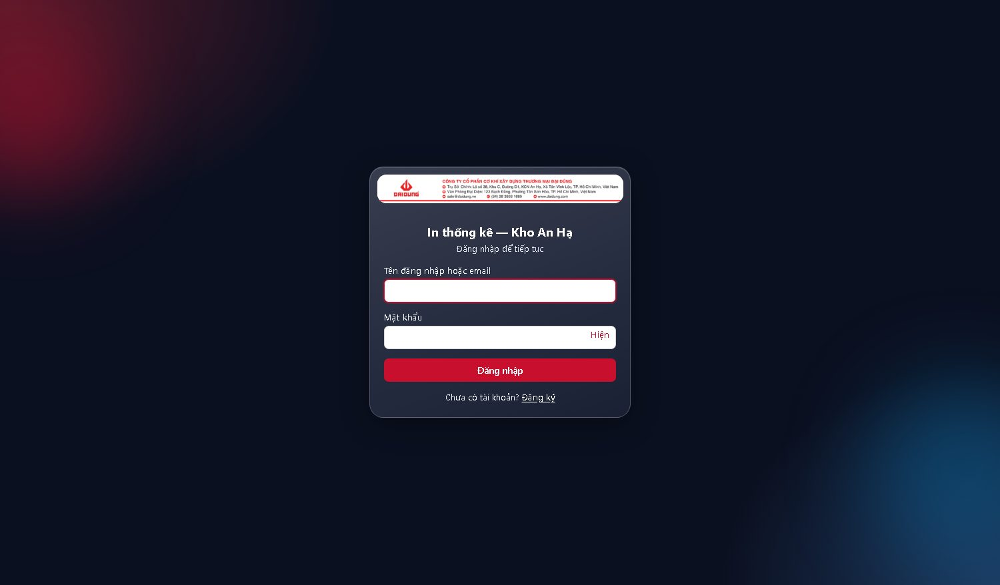
1Tên đăng nhập (ví dụ bao.lt) hoặc email.
2Mật khẩu. Bấm Hiện để xem lại chữ đã gõ.
3Bấm Đăng nhập hoặc Enter.
4Chưa có tài khoản → Đăng ký.
Đăng ký tài khoản mới
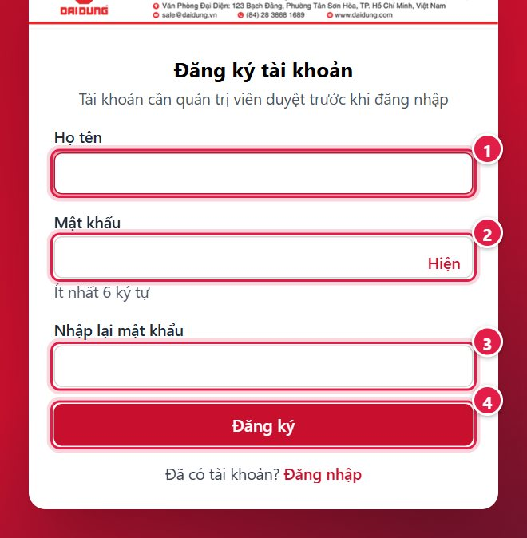
1Họ tên đầy đủ, có dấu — hệ thống tự tạo tên đăng nhập (“Lê Thái Bão” → bao.lt). Ghi lại tên này.
2Mật khẩu ít nhất 6 ký tự.
3Nhập lại mật khẩu.
4Bấm Đăng ký.
Tài khoản mới ở trạng thái chờ duyệt — đăng nhập được sau khi Admin duyệt.
Mỗi mạng (wifi) chỉ gửi được 5 lần đăng ký mỗi giờ, và hệ thống nhận tối đa 20 tài khoản đang chờ duyệt. Khi cần đưa nhiều người vào cùng lúc, nhờ Admin tạo tài khoản (chương 12).
MẹoĐăng ký đúng họ tên như trong danh mục NV xuất: khi thêm phiếu, phần mềm tự điền tên bạn vào ô NV xuất (chương 3).
Ba vai trò
Thao tác
Chỉ xem
Người dùng
Admin
Xem dữ liệu, báo cáo, in thống kê
✓
✓
✓
Nhập phiếu, bảng kiểm
—
✓
✓
Sửa / xóa trong 24 giờ
—
Của mình
✓ mọi lúc
Sửa sau 24 giờ
—
Sau khi Admin duyệt
✓
Danh mục
—
Thêm
Thêm, sửa, xóa
Duyệt yêu cầu sửa
—
—
✓
Quản lý tài khoản, đồng bộ lại Google Sheet
—
—
✓
Chỉ xem dành cho người chỉ cần tra cứu, xem báo cáo và in. Tài khoản này không có nút thêm phiếu, thêm dòng hay yêu cầu sửa. Cần đổi vai trò thì nhờ Admin.
2
Màn hình chính
Mọi người
Bạn sẽ làm gì: làm quen các vùng trên màn hình để biết bấm ở đâu.
Trang Nhập phiếu — trang mở đầu tiên sau khi đăng nhập.
1Menu dạng khung kính mờ bên trái, bấm để chuyển trang; mục đang mở sáng lên. Phía trên là các mục chính: Nhập phiếu, Bảng kiểm, In thống kê, Báo cáo, Danh mục, Luồng công việc. Bên dưới có nhóm Trợ giúp (Giới thiệu, Hướng dẫn sử dụng) và, chỉ với Admin, nhóm Admin (Yêu cầu sửa, Quản lý người dùng). Hai nhóm này đang thu lại: bấm tên nhóm (mũi tên > bên phải) để mở, bấm lần nữa để đóng. Nhóm tự mở khi bạn đang ở một trang bên trong nó. Hướng dẫn sử dụng mở ngay trong phần mềm, menu vẫn còn bên trái.
2Số liệu tháng này: số phiếu, số dòng bảng kiểm, tổng khối lượng (kg). Nút Ẩn số liệu thu gọn.
3Bộ lọc: tìm nhanh và khoảng ngày (chương 6). Nút Ẩn bộ lọc thu gọn.
4+ Thêm phiếu (phím N). Tài khoản Chỉ xem không có nút này.
5Tiêu đề cột. Cột có mũi tên sắp xếp ↕ bấm được. Cột Thao tác luôn đứng đầu.
6Đang trực tuyến: danh sách người đang mở phần mềm.
1Bấm Thu gọn ở cuối menu để menu chỉ còn biểu tượng, bảng rộng hơn. Bấm nút mở rộng để mở lại. Phần mềm nhớ lựa chọn của bạn. Khi thu gọn, tên nhóm được ẩn và mọi biểu tượng (kể cả các mục trong nhóm Trợ giúp, Admin) hiện thành một hàng chung.
Dữ liệu tự cập nhật
Người khác thêm, sửa, xóa thì bảng của bạn tự đổi theo ngay — không cần tải lại trang.
Thông báo
Thông báo nổi ở góc màn hình: đã lưu, đã xóa, yêu cầu sửa được duyệt / từ chối…
Thanh nhắc vàng / đỏ ở đầu trang khi bạn còn phiếu hoặc dòng thiếu thông tin (chương 7).
Số màu cam trên menu (Admin): số mục đang chờ duyệt. Khi nhóm Admin đang đóng, số tổng (tài khoản chờ duyệt + yêu cầu sửa) hiện ở dòng Admin; khi mở nhóm, mỗi mục Yêu cầu sửa / Quản lý người dùng có số riêng.
Nhiều người cùng làm
Số phiếu TK không bao giờ trùng: mỗi người đang thêm phiếu giữ một số riêng.
Người khác đang nhập dở: bạn thấy dòng nháp của họ (có tên và màu riêng), cập nhật theo từng chữ họ gõ.
Ai đang sửa phiếu nào: hiện nhãn tên cạnh số phiếu.
Khi chuyển trang, màn hình mờ dần sang trang mới — đây là hiệu ứng bình thường.
3
Nhập phiếu thống kê
Mọi người
Bạn sẽ làm gì: lập một phiếu thống kê vận chuyển mới — số phiếu TK được cấp tự động.
Vào Nhập phiếu, bấm + Thêm phiếu (hoặc phím N). Một dòng nhập mới nền vàng hiện ở đầu bảng — giống thêm dòng trong Google Sheets.
Điền các ô. Dùng Tab để sang ô kế tiếp.
Bấm Lưu phiếu hoặc Enter. Hủy: Hủy hoặc Esc. Lưu xong, dòng nhập đóng lại và phiếu hiện trong bảng; muốn nhập tiếp thì bấm + Thêm phiếu lần nữa.
Cũng có thể nhập thẳng trên bảng: bấm vào số phiếu hoặc nút Sửa, dòng đổi sang ô nhập, sửa xong bấm Lưu. Tài khoản Chỉ xem không thấy nút Thêm phiếu.
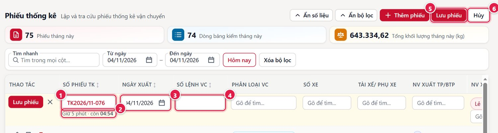
1Số phiếu TK cấp tự động (dạng TK2026/11-076), không sửa được.
2Số được giữ riêng cho bạn 5 phút, có đồng hồ đếm ngược. Còn gõ là còn gia hạn.
3Ngày xuất — mặc định hôm nay.
4Số lệnh VC — gõ tay.
5Lưu phiếu trên đầu trang (giống nút Lưu phiếu đầu dòng).
6Hủy — bỏ dòng đang nhập, trả lại số TK.
Hết 5 phút mà chưa lưuDòng nhập tự hủy, số TK được trả lại. Nên lưu sớm rồi bổ sung sau (trong 24 giờ).
Ô chọn có gợi ý
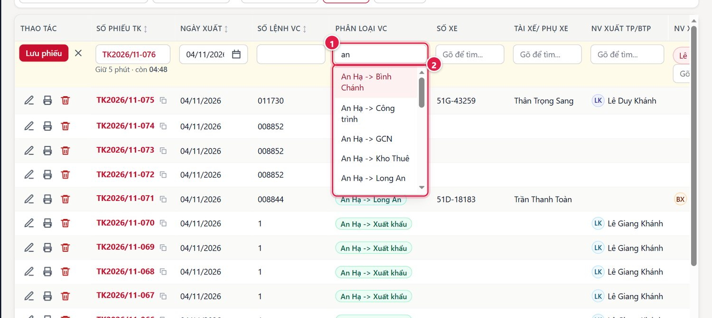
1Gõ vài chữ, không cần dấu (ví dụ “an”).
2Danh sách gợi ý hiện ra — dùng ↑↓ rồi Enter, hoặc bấm chuột để chọn.
3Bấm Tab để chọn luôn mục đầu tiên của gợi ý và sang ô kế tiếp — nhanh hơn dùng chuột.
Ô có chữ mà chưa chọn mục nào sẽ báo “Chưa chọn từ danh mục” khi lưu. Không có tên cần chọn → thêm ở Danh mục (chương 10) hoặc bấm + Thêm ngay trong ô gợi ý.
NV xuất tự điền theo tên bạn
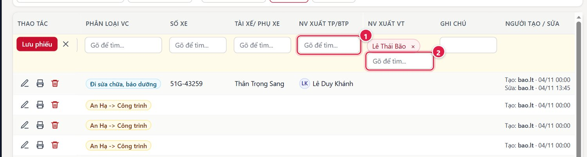
1NV xuất TP/BTP — người xuất thành phẩm / bán thành phẩm (hiện là Lê Duy Khánh, Lê Giang Khánh). Chọn 1 người.
2NV xuất VT — những người còn lại, chọn được nhiều người. Bấm × trên tên để bỏ.
Tên bạn có trong NV xuất TP/BTP → tự điền vào ô đó; không thì tự điền vào NV xuất VT (như hình). Người xuất không phải bạn thì bỏ tên đi và chọn đúng người.
4
Sửa, xóa, in, chép số phiếu
Mọi người
Bạn sẽ làm gì: dùng các nút ở cột Thao tác và cạnh số phiếu.
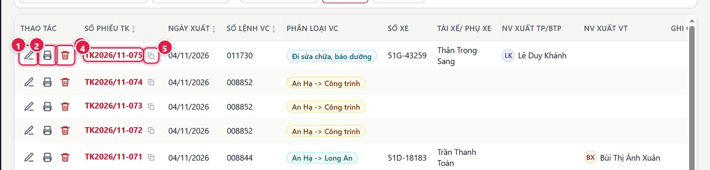
1Sửa — mở sửa ngay trên dòng.
2In — mở trang In thống kê đúng phiếu này.
3Xóa — hỏi lại trước khi xóa. Mờ đi nghĩa là bạn không được xóa.
4Bấm vào số phiếu TK — cũng mở sửa (hoặc chỉ xem nếu không đủ quyền).
5Nút chép số phiếu (cạnh số TK) — báo “Đã chép”, rồi dán (Ctrl+V) vào Zalo, Excel…
Sửa ngay trên bảng
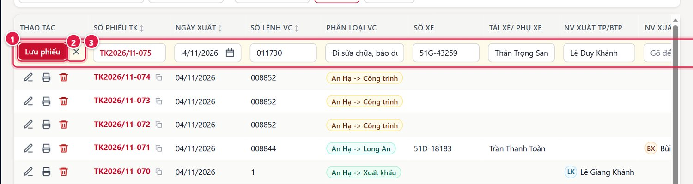
1Dòng chuyển sang nền vàng, mọi ô thành ô nhập — sửa như Google Sheets.
2Bấm Lưu phiếu hoặc Enter để lưu.
3Bấm × hoặc Esc để bỏ. Có thay đổi chưa lưu thì phần mềm hỏi lại.
Xóa phiếu
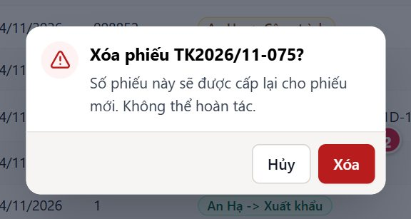
1Hủy — không xóa.
2Xóa — xóa hẳn, không hoàn tác. Xóa phiếu là xóa luôn các dòng bảng kiểm của phiếu. Nếu phiếu còn dòng bảng kiểm, phần mềm chuyển bạn sang Bảng kiểm để xem các dòng đó.
Ai được sửa / xóa
Người tạo: phiếu của mình, trong 24 giờ kể từ lúc tạo.
Sau 24 giờ: nút Yêu cầu sửa hiện ở cột Thao tác — xem chương 7.
Admin: mọi phiếu, mọi lúc.
Tài khoản Chỉ xem: không sửa, không xóa.
Rê chuột lên nút bị mờ để xem lý do không bấm được.
5
Bảng kiểm chi tiết
Mọi người
Bạn sẽ làm gì: nhập từng mặt hàng của phiếu xuất kho, gắn vào đúng số phiếu TK.
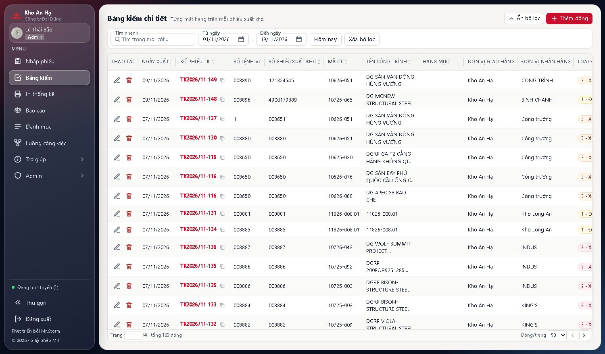
1+ Thêm dòng (phím N). Đang có dòng nhập mà bấm tiếp thì thêm dòng nữa.
2Bộ lọc — giống trang Nhập phiếu.
3Mỗi dòng là một mặt hàng trên một phiếu xuất kho.
Bấm + Thêm dòng. Chọn Số phiếu TK trước — các ô khác bị khóa cho tới khi chọn.
Số lệnh VC, Số xe, Tài xế, NV xuất được lấy tự động từ phiếu.
Điền: Ngày xuất, Số phiếu xuất kho, Công trình (gõ mã CT hoặc tên — chọn mã thì tên công trình tự điền), Hạng mục, Đơn vị giao (mặc định Kho An Hạ), Đơn vị nhận, Loại hình xuất, Mặt hàng, ĐVT, Số lượng, Khối lượng (kg), Nhà xe, Ghi chú.
Bấm Lưu dòng hoặc Enter. Lưu xong, dòng nhập đóng lại và hiện trong bảng.
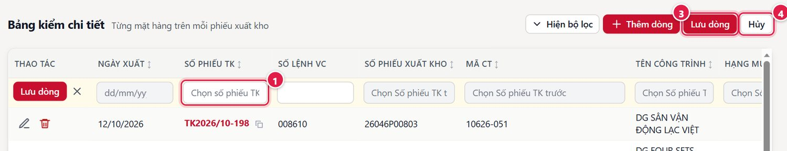
1Số phiếu TK — chọn đầu tiên. Các ô khác ghi “Chọn Số phiếu TK trước”.
3Lưu dòng
4Hủy
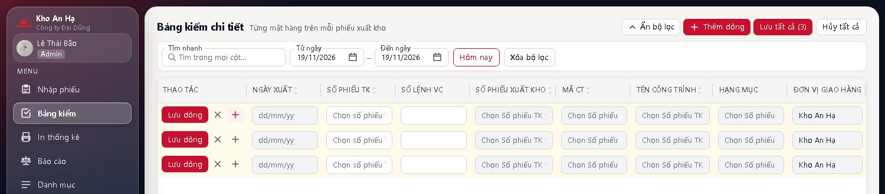
NV xuất hàng: để trống = theo phiếu (NV xuất TP/BTP; không có thì NV xuất VT đầu tiên). Chỉ chọn khi dòng này do người khác xuất.
Nhập nhiều dòng cùng lúc: bấm nút + trên dòng nhập (hoặc + Thêm dòng) để thêm dòng bên dưới, tự điền sẵn phiếu, ngày, công trình… của dòng trước. Xong bấm Lưu tất cả (hoặc Hủy tất cả). Tối đa 20 dòng nhập cùng lúc; lưu lần lượt từ trên xuống, gặp dòng lỗi hoặc thiếu thông tin thì dừng ở dòng đó.
Nhập thẳng trên bảng: bấm Sửa trên dòng để sửa tại chỗ như Google Sheets.
Số nhập kiểu Việt Nam: dấu phẩy là thập phân (5,5). Bảng hiển thị 1.234.567,89.
6
Tìm kiếm và lọc
Mọi người
Bạn sẽ làm gì: tìm đúng phiếu / dòng trong hàng chục nghìn dòng dữ liệu.
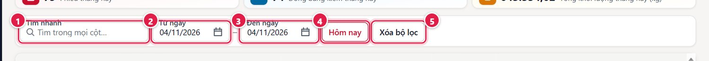
1Tìm nhanh (phím /): gõ bất kỳ nội dung trong bảng — số phiếu, số lệnh, số xe, tài xế, công trình, mặt hàng, người tạo… Không cần dấu.
2Từ ngày — theo ngày xuất. Gõ dd/mm/yyyy hoặc bấm biểu tượng lịch.
3Đến ngày.
4Hôm nay — đặt nhanh về hôm nay.
5Xóa bộ lọc — bỏ mọi điều kiện, xem toàn bộ dữ liệu.
Mặc định khi mở trang: chỉ hiện dữ liệu hôm nayKhông thấy phiếu cũ? Bấm Xóa bộ lọc hoặc chọn lại khoảng ngày rồi tìm lại.
Bấm tiêu đề cột có mũi tên ↕ để sắp xếp tăng / giảm.
Ở ô gõ, mũi tên ←→ chuyển sang ô bên cạnh khi con trỏ đã ở mép chữ.
Cuối bảng: ô Trang, nút ‹ › chuyển trang, Dòng/trang chọn 25 – 100 dòng.
Tìm khớp quá nhiều sẽ hiện “hơn 10.000 dòng” — gõ cụ thể hơn hoặc thu hẹp ngày.
7
Quy tắc 24 giờ & “đủ thông tin”
Mọi người
Bạn sẽ làm gì: biết khi nào được sửa, cách xin sửa sau 24 giờ, và vì sao có thể bị khóa thao tác.
0 – 24 giờNgười tạo tự sửa / xóa
→
Sau 24 giờChỉ xem — bấm Yêu cầu sửa
→
Admin duyệtĐược sửa thêm 24 giờ (không xóa)
Yêu cầu sửa (sau 24 giờ)
Ở phiếu / dòng của bạn đã quá 24 giờ, bấm Yêu cầu sửa ở cột Thao tác, ghi lý do, gửi.
Cột Thao tác hiện nhãn Chờ duyệt. Admin được báo ngay.
Admin duyệt → bạn nhận thông báo, nhãn đổi thành Sửa đến … (24 giờ). Admin từ chối → thông báo kèm lý do.
Phiếu và dòng phải đủ thông tin trong 24 giờ
Bắt buộc có
Được để trống
Phiếu
Ngày xuất, Số lệnh VC, Phân loại VC, Số xe, Tài xế/phụ xe, và NV xuất TP/BTP hoặc ít nhất 1 NV xuất VT
Ghi chú
Dòng bảng kiểm
Số phiếu TK, Số phiếu xuất kho, Công trình, Đơn vị giao, Đơn vị nhận, Loại hình xuất, Mặt hàng, ĐVT, Số lượng, Khối lượng
Hạng mục, Nhà xe, NV xuất hàng, Ghi chú
Thanh vàng — còn hạnĐược lưu tạm khi chưa đủ. Thanh vàng đầu trang cho biết bạn còn mấy phiếu / dòng thiếu thông tin (hạn điền: 24 giờ từ lúc tạo). Bấm Xem → mỗi mục ghi thiếu ô nào và hạn điền đủ lúc mấy giờ; bấm tên phiếu / dòng để mở đúng chỗ.
Thanh đỏ — quá 24 giờ vẫn thiếuThanh đỏ ghi “Bạn đang bị khóa thao tác” và luôn hiện danh sách mục thiếu. Bạn không thêm mới, không sửa / xóa phiếu khác — cho đến khi điền đủ. Các mục thiếu vẫn sửa được ngay.
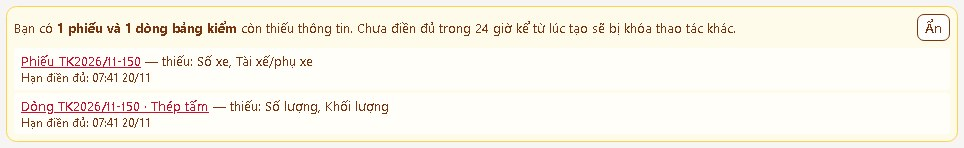
Thanh vàng (còn hạn): bấm Xem để thấy từng mục thiếu và hạn điền đủ.
Chọn nhóm ở hàng nút trên cùng: Phiếu thống kê (Phân loại VC, Số xe, Tài xế/phụ xe, NV xuất TP/BTP, NV xuất VT) và Bảng kiểm chi tiết (Công trình, Đơn vị giao/nhận, Loại hình xuất, Mặt hàng, ĐVT, Nhà xe).
Danh sách xếp theo số tự nhiên (1, 2, … 10) và không cho tạo trùng tên.
Tài khoản Chỉ xem chỉ xem danh mục, không thêm được.
Xóa mục đang được phiếu cũ dùng: mục được ẩn khỏi danh sách chọn, phiếu cũ vẫn giữ nguyên tên. Muốn dùng lại thì thêm lại cùng tên.
Tránh tạo trùngLuôn gõ vào ô Lọc theo tên trước — tránh các kiểu “Xe thuê” / “XE THUÊ”.
11
Dùng trên điện thoại
Mọi người
Bạn sẽ làm gì: nhập phiếu, tra cứu và in ngay trên điện thoại — mở cùng địa chỉ web bằng Chrome / Safari.
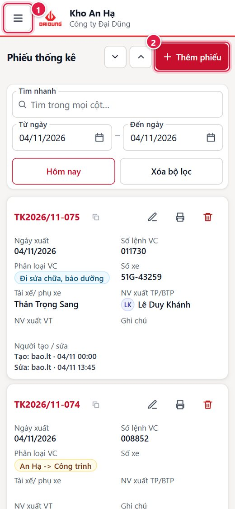
Danh sách dạng thẻ.1 nút ☰ mở menu · 2 Thêm phiếu. Mỗi thẻ hiện đủ thông tin, nút Sửa / In / Xóa ở góc phải.
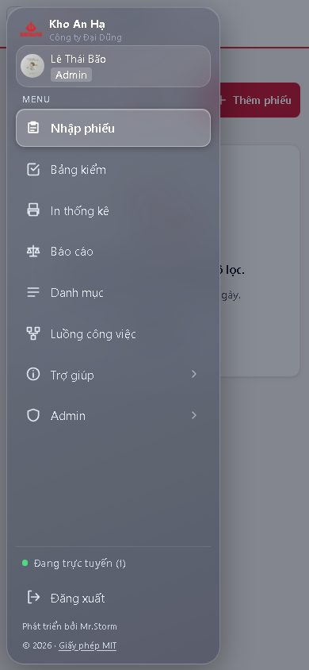
Menu ☰. Cùng menu như trên máy tính; nhóm Trợ giúp, Admin cũng bấm tên để mở / đóng. Bấm ra ngoài vùng tối để đóng.
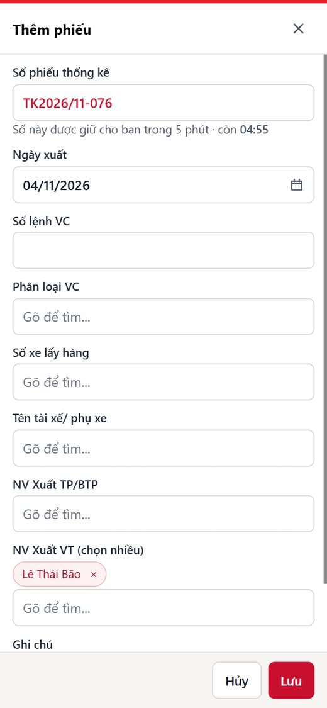
Thêm phiếu mở khung nhập toàn màn hình. Bấm Lưu ở cuối (hoặc Ctrl+Enter).
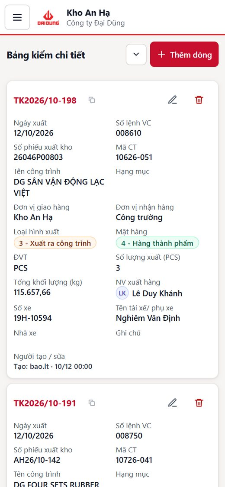
Bảng kiểm cũng hiện dạng thẻ.
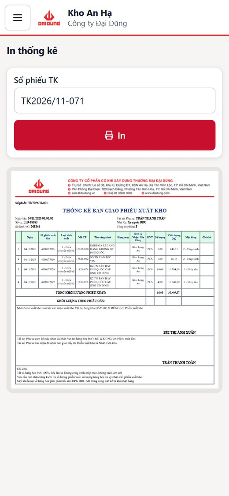
In thống kê — chọn số phiếu, bấm In hoặc chia sẻ PDF.
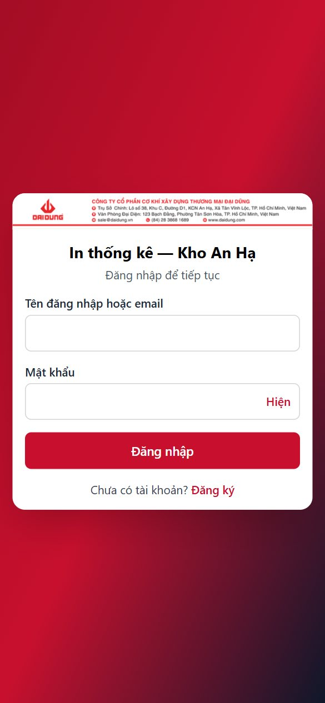
Đăng nhập trên điện thoại.
MẹoThêm trang vào màn hình chính: Chrome → ⋮ → Thêm vào màn hình chính; Safari → Chia sẻ → Thêm vào MH chính. Lần sau mở như một ứng dụng.
12
Dành cho Admin
Admin
Bạn sẽ làm gì: quản lý tài khoản nhân viên, đổi vai trò, duyệt yêu cầu sửa và đồng bộ lại Google Sheet.
Tìm ở đâuHai trang của Admin nằm trong nhóm Admin ở cuối menu (bấm tên nhóm để mở): Yêu cầu sửa và Quản lý người dùng. Người dùng và Chỉ xem không thấy nhóm này.
Quản lý người dùng
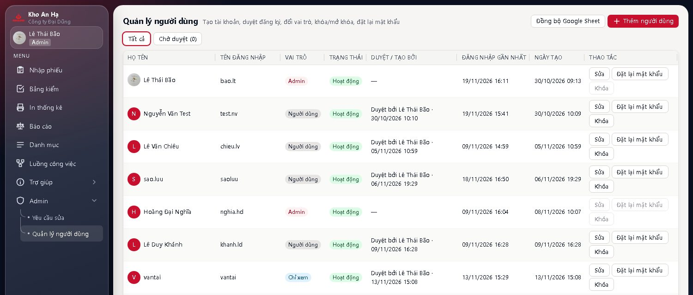
1Tất cả tài khoản người dùng.
2Chờ duyệt — tài khoản tự đăng ký (số đếm cũng hiện trên menu, ở dòng Admin hoặc ngay mục này). Bấm Duyệt hoặc Từ chối.
3+ Thêm người dùng — tạo sẵn tài khoản cho nhân viên.
4Đồng bộ Google Sheet — ghi lại toàn bộ dữ liệu lên Google Sheet (xem bên dưới).
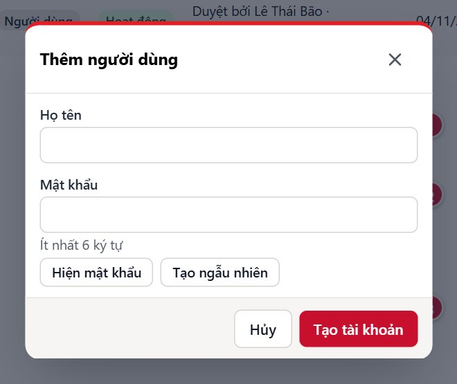
Nhập Họ tên có dấu — tên đăng nhập tự tạo và hiện ngay bên dưới.
Nhập Mật khẩu ban đầu hoặc bấm Tạo ngẫu nhiên.
Bấm Tạo tài khoản → hộp thông tin đăng nhập hiện ra, bấm Chép để gửi cho nhân viên.
Mỗi dòng: Sửa (đổi họ tên và vai trò Người dùng / Chỉ xem), Đặt lại mật khẩu, Khóa / Mở khóa.
Người bị khóa không xem và không thao tác được gì. Bạn không tự khóa được chính mình.
Khi tạo tài khoản có ô Vai trò. Người chỉ cần xem báo cáo, tra cứu, in thì chọn Chỉ xem; đổi lại bằng nút Sửa.
Yêu cầu sửa
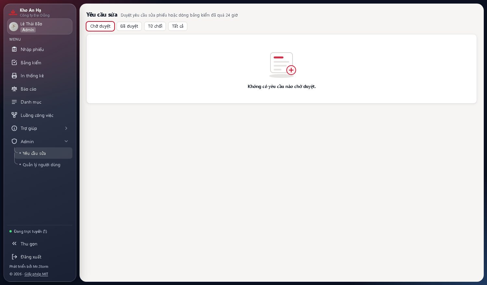
Lọc theo Chờ duyệt / Đã duyệt / Từ chối / Tất cả (ảnh chụp lúc không có yêu cầu chờ duyệt).
Mở nhóm Admin → Yêu cầu sửa; có số đếm cam khi có yêu cầu mới. Xem lý do → Duyệt (mở sửa 24 giờ) hoặc Từ chối (nên ghi lý do).
Duyệt chỉ cho phép sửa, không cho phép xóa.
Giữ danh mục NV xuất TP/BTP đúng người — ô chọn và việc tự điền tên dựa vào đây.
Đồng bộ Google Sheet
Mỗi lần thêm, sửa, xóa phiếu hoặc dòng bảng kiểm, dữ liệu được tự ghi sang file Google Sheet (2 tab: Phiếu thống kê, Bảng kiểm). Không cần làm gì thêm.
Khi cần ghi lại tất cả (ví dụ file Google Sheet bị sửa nhầm), bấm Đồng bộ Google Sheet ở trang Quản lý người dùng (nhóm Admin), rồi bấm Đồng bộ để xác nhận.
Lưu ý khi đồng bộ lạiNội dung 2 tab trong file Google Sheet sẽ bị xóa rồi ghi lại theo dữ liệu trên phần mềm. Có thể mất vài phút — đừng đóng trang khi đang chạy. Xong có thông báo “Đã ghi … dòng lên Google Sheet”.
Google Sheet chỉ để tham khảo / báo cáo thêm. Dữ liệu chuẩn nằm trên phần mềm; sửa trực tiếp trong Google Sheet sẽ không đổi dữ liệu trên phần mềm.
13
Tra cứu nhanh & hỏi đáp
Mọi người
Phím tắt
N
Thêm phiếu / thêm dòng (khi không đang gõ trong ô nào)
/
Nhảy tới ô Tìm nhanh
Enter
Lưu dòng đang nhập; chọn gợi ý trong ô chọn
Esc
Hủy dòng đang nhập; đóng gợi ý / khung
Tab
Sang ô kế tiếp; khi đang gõ ở ô gợi ý thì chọn luôn mục đầu tiên
Ctrl + Enter
Lưu trong khung nhập (điện thoại)
←→
Chuyển ô khi con trỏ ở mép chữ; chuyển tab ở trang Báo cáo
Câu hỏi thường gặp
Tình huống
Cách xử lý
Không thấy phiếu / dòng tạo hôm trước
Trang đang lọc “hôm nay” — bấm Xóa bộ lọc hoặc chọn lại khoảng ngày.
Không bấm được Sửa / Xóa
Đã quá 24 giờ hoặc không phải phiếu của bạn → gửi Yêu cầu sửa. Nếu thanh đỏ đang hiện: điền đủ các mục thiếu trước.
Không thấy nút Thêm phiếu / Thêm dòng
Tài khoản của bạn là Chỉ xem. Nhờ Admin đổi sang Người dùng nếu cần nhập.
Số liệu Báo cáo khác số bạn nhớ
Báo cáo lấy từ Bảng kiểm theo ngày xuất, làm tròn đến tấn. Kiểm tra lại năm / tháng / khoảng ngày đang chọn.
Google Sheet chưa thấy dữ liệu mới
Tải lại Google Sheet. Vẫn thiếu thì báo Admin bấm Đồng bộ Google Sheet.
Báo “còn phiếu/dòng quá 24 giờ chưa điền đủ”
Mở các mục trong thanh đỏ đầu trang, điền đủ ô còn thiếu.
Dòng nhập tự biến mất
Hết 5 phút giữ số mà chưa lưu. Bấm Thêm phiếu lại; nên lưu sớm rồi bổ sung sau.
Không tìm thấy tên trong ô chọn
Thêm ở Danh mục đúng nhóm.
Tên mình không tự điền vào NV xuất
Họ tên tài khoản phải giống hệt tên trong danh mục NV xuất — nhờ Admin sửa.
Đăng ký báo “thử lại sau”
Mạng đã gửi quá 5 lần đăng ký trong 1 giờ, hoặc đang có 20 tài khoản chờ duyệt. Đợi hoặc nhờ Admin tạo tài khoản.
Bản in bị lệch, có đầu / chân trang lạ
Khổ A4, lề Mặc định, tắt “Đầu trang và chân trang”, tỉ lệ 100%.
Quên mật khẩu
Liên hệ Admin để đặt lại.
Không thấy Giới thiệu / Hướng dẫn sử dụng trên menu
Hai mục này nằm trong nhóm Trợ giúp (đang thu lại) — bấm tên nhóm để mở.
Không thấy Yêu cầu sửa / Quản lý người dùng
Chỉ Admin có nhóm Admin trên menu. Nếu bạn là Admin mà chưa thấy mục: bấm tên nhóm Admin để mở.
Luồng công việc
Mục Luồng công việc trên menu mở sơ đồ quy trình làm việc. Bấm vào từng ô để xem chi tiết; dùng nút “Mở toàn màn hình” để xem lớn. Trang này chỉ để xem, không nhập gì.
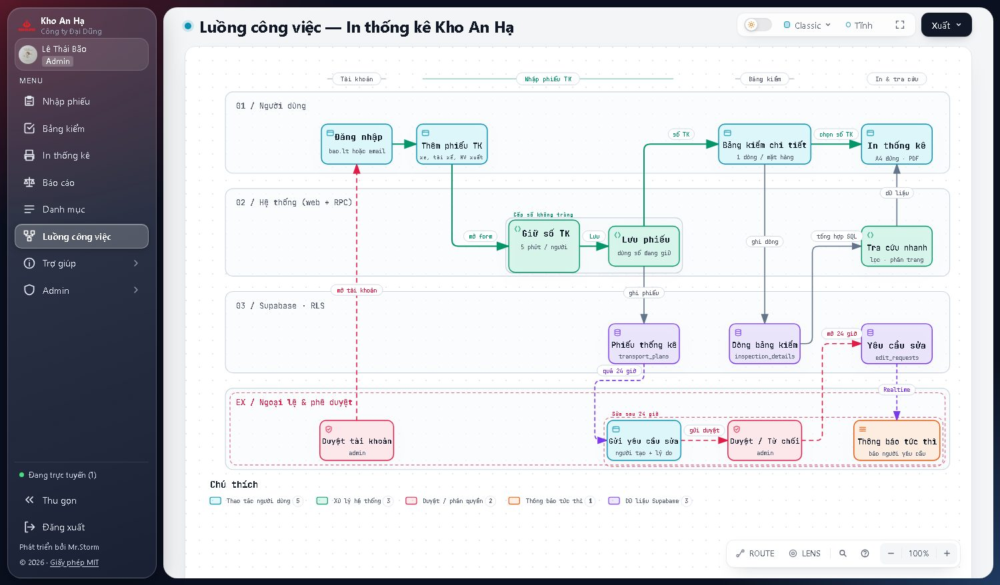
Trang Luồng công việc trong phần mềm.
Tài liệu lưu hành nội bộ — Kho An Hạ, Công ty Đại Dũng. Phiên bản 19/11/2026. Góp ý, báo lỗi: liên hệ Admin phần mềm.